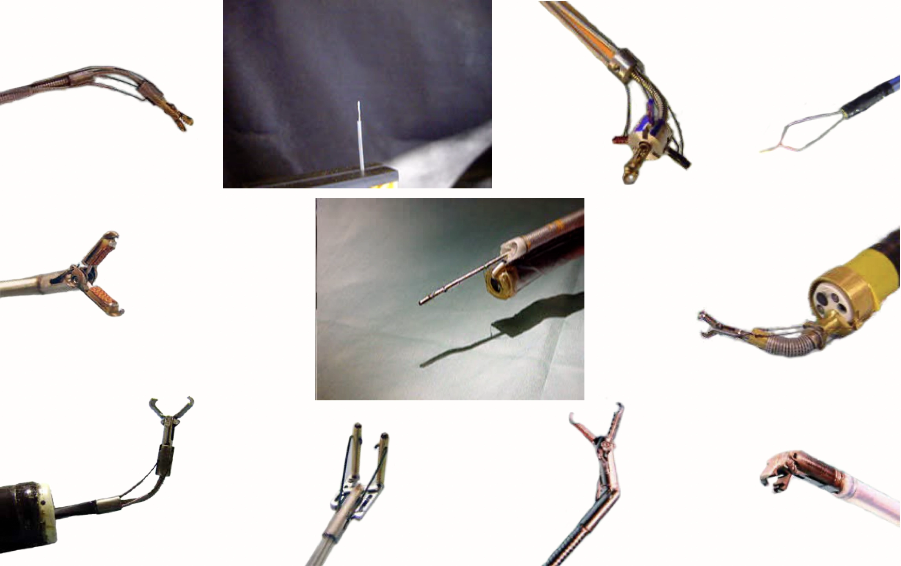
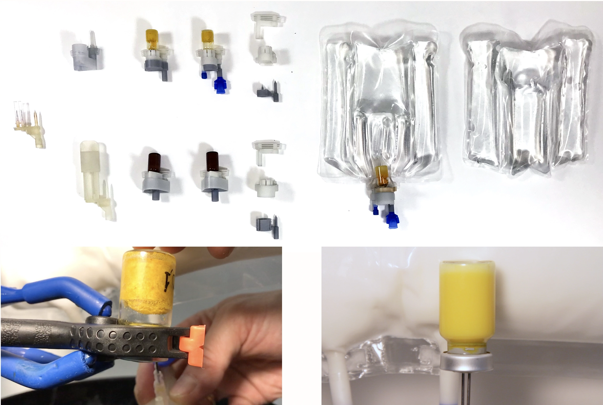
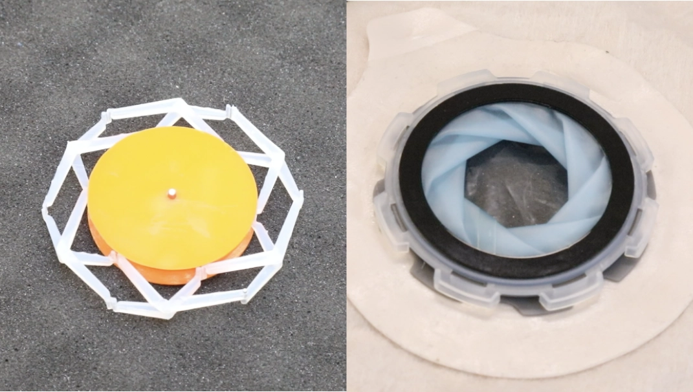
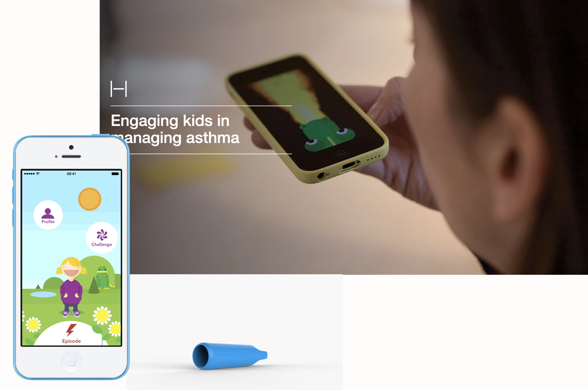
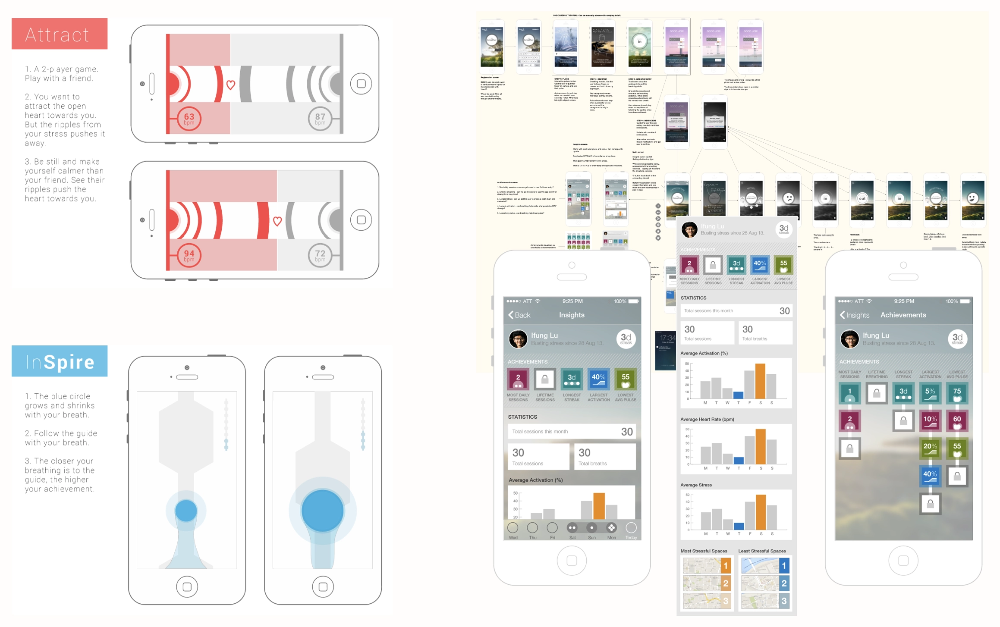
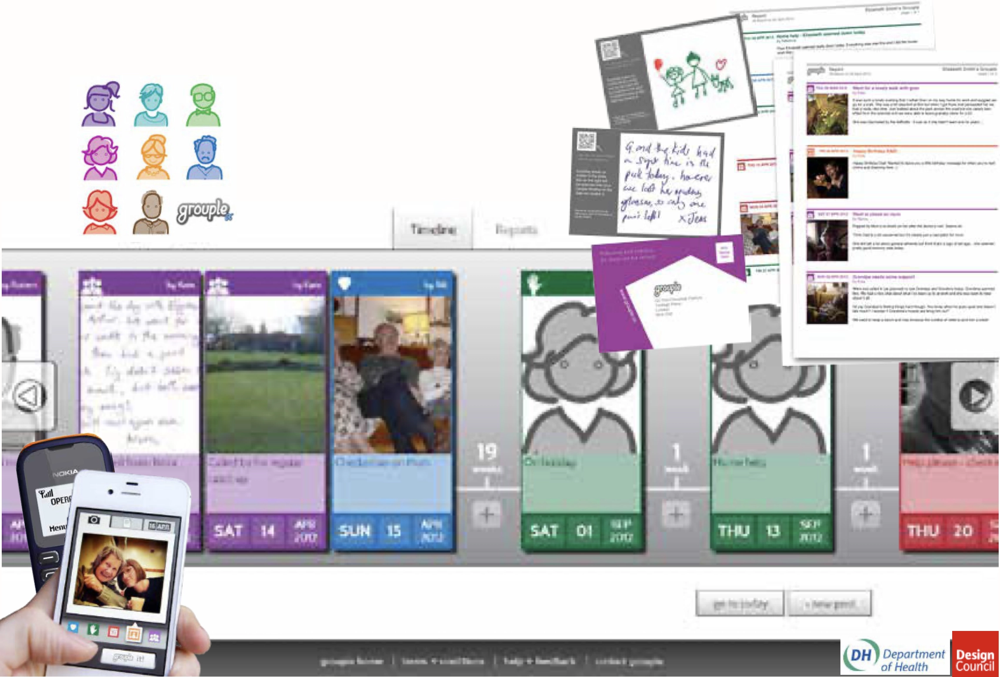

Wie ich arbeite – guān xīn 關心, sich kümmern
Die Mechanik ist nie Selbstzweck. Diese vier Grundsätze liegen jedem Projekt zugrunde.Der Mensch zuerst
Fundierte Nutzer-, klinische und Feldforschung, bevor der erste Mechanismus entsteht. Ich gestalte für die Momente, die für echte Menschen zählen.
Sorgfalt ist eine Form der Fürsorge
Design Control, Evidenz und Sicherheit sind keine Bürokratie – im Gesundheitswesen sind sie Ausdruck von Respekt gegenüber den Menschen, die sich darauf verlassen.
Umsetzen statt theoretisieren
Funktionierende Prototypen statt Foliensätze. Vom Kadaverlabor bis in den App Store mache ich das Unmögliche greifbar – schnell und mit kleinsten Teams.
Technologie für das Gemeinwohl
Design für humanistische Lösungen, Technologie, um sie zu skalieren und Menschen Superkräfte zu verleihen. Die Haltung eines Sozialunternehmens – wirtschaftlich umgesetzt.
Leistungen
Sie kommen wegen der technischen Expertise. Design Thinking und ein menschzentrierter Ansatz sind inklusive.Produkt- & Technologiestrategie
Klarheit über den nächsten Schritt. Markt- und Technologieanalyse, Bewertung von Chancen und technische Due Diligence für Teams, die vor unbekannten Unbekannten stehen.
Konstruktion & Prototyping
Vom Konzept zum funktionsfähigen Gerät – Mechanismen, Medizinprodukte und Hardware, mit Design Control nach ISO 13485, wo es darauf ankommt.
Design & UX für regulierte Märkte
Forschungsbasiertes Interaktions- und UI-Design für klinische und Consumer-Health-Produkte, die Menschen tatsächlich bedienen können.
Schlanke, KI-gestützte Umsetzung
Echte Produkte mit sehr kleinen Teams auf den Markt bringen. Produktion und Betrieb führe ich so, wie ich Singfinger aufgebaut habe – zwei Personen, konsequente Automatisierung und KI-Werkzeuge.
Ausgewählte Projekte
Atome & Bits – von chirurgischen Instrumenten bis zu digitalen Therapeutika.
MEDTECH · ATOMSAbwinkelbare chirurgische Instrumente
Manuell abwinkelbare endoskopische Instrumente für die minimalinvasive Chirurgie. Als Erfinder auf 13 US-Patenten genannt – vom Wetlab bis in den OP.

MEDTECH · ATOMSVakuumsystem für parenterale Ernährung
Ein Mehrkammer-Infusionsbeutel mit Peel-Nähten und ein vakuumbasiertes System zur Rekonstitution gefriergetrockneter Mikronährstoffe vor Ort.

MEDTECH · ATOMSWürdevolle Stoma-Kupplung
Kupplungskonzepte mit Gelenkmechanismus und Irisblende aus Polymerfolie – für eine Stomaversorgung, die emotionalen Bedürfnissen mit mehr Empathie begegnet.

DIGITAL HEALTH · BITSSpielerisches Asthma-Management
Eine Pfeife mit veränderlicher Tonhöhe und eine Smartphone-App, die Spirometriewerte aus dem Klang ableitet – damit Kinder bei ihrer Therapie dranbleiben.

DIGITAL HEALTH · BITSMusik aus dem Herzschlag
Programm gegen Stress und Angst mit Atemübungen, KVT und aus Biometriedaten generierter Musik. Seed-Förderung durch Innovate UK; klinische Partnerschaft mit dem UCL. Von Huma übernommen.

SOCIAL ENTERPRISE · BITSGut leben mit Demenz
Ein kleines soziales Netzwerk für Familien, die einen geliebten Menschen pflegen. Full-Stack-MVP; Seed-Förderung durch Design Council & UK Dept of Health.
Guanxin Labs – Produkte, jetzt erhältlich
Singfinger
Eine deutschsprachige Plattform für Gebärdenunterstützte Kommunikation (GuK) für nicht sprechende Kinder und Kinder mit Behinderung – sowie für ihre Eltern, Lehrkräfte und Therapeutinnen und Therapeuten. Eine iOS- & Android-App, eine Gebärdenbibliothek mit über 700 Symbolen auf Basis eines eigenen 3D-Rigs, über 150 kostenlose Videos auf YouTube, darunter Koproduktionen mit dem WDR – und die kostenpflichtige Mitgliedschaft im Singfinger Club. Entwickelt und betrieben von zwei Personen, mit konsequentem Einsatz von KI-Werkzeugen. Vertrieb über Guanxin Labs.
- Plattform
- iOS · Android
- Gebärdenbibliothek
- 700+ „Alexicon“
- YouTube
- 150+ · inkl. WDR
- Club-Start
- 18 Gründungsmitglieder
- Firmiert als
- guanxin.labs
Warum ich das tue
guān xīn (關心) – Verb – sich kümmern um, Anteil nehmen an. Das ist der Name und zugleich der Kern: Design für humanistische Lösungen, Technologie, um sie zu skalieren und Menschen Superkräfte zu verleihen. Konsequent Tech for Good.
Chirurgische Instrumente bei J&J, Innovation für den NHS im Helix Centre im St Mary's Hospital, Produktberatung für Baxter, ConvaTec und Illumina – und zuletzt Singfinger, von Grund auf mit einem Zweierteam aufgebaut. Unterschiedliche Aufgaben, ein roter Faden: das zu bauen, was wirklich hilft.
Ich suche die nächste Herausforderung: eine Führungsrolle in Produkt oder Technologie, ein Fractional- bzw. Beratungsmandat oder ein Gründungsteam – an der Schnittstelle von Gesundheitswesen, Medizintechnik und KI-gestützter Produktentwicklung.
- Standort
- Köln / BonnTroisdorf, Deutschland
- Sprachen
- EN MutterspracheDE B2 · berufstauglich
- Reisepässe
- UK · USAufträge ohne Visum
- Branchen
- Gesundheit · MedizintechnikKonsumgüter · Soziales
- Offen für
- Freelance · Fractional& die passende Festanstellung